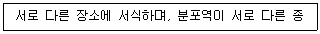
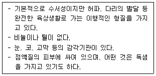
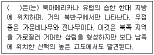
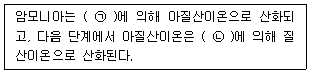
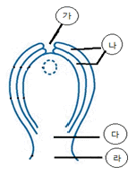
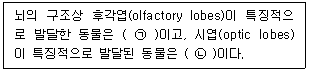
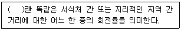
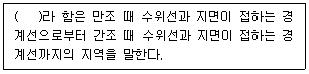

생물분류기사(동물) (2016-05-08 기출문제)
1과목: 계통분류학
1. 다윈의 진화론에 담긴 내용과 가장 거리가 먼 것은?
- 집단 내 개체간의 변이
- 자연선택
- 과잉번식
- 돌연변이
(정답률: 62%)

2. 다음 중 분류계급에 관련한 설명 중 옳지 않은 것은?
- 절(節, section)은 동물분류에서는 과와 목 준위 사이의 계급이다.
- 동물분류에서 종하계급으로 변종과 품종이 명명규약상 인정되고 있다.
- 종(種, species)은 분류계급의 기본이다.
- 족(族, tribe)은 식물 분류, 동물 분류 공히 속과 과의 중간계급으로 다루어진다.
(정답률: 70%)
3. 종에 관련된 용어로서 자매종(Sibiling species)은 매우 비슷하고, 가까운 관계에 있는 종들의 쌍 또는 군을 말하며, 동소종(Sympatric species)은 같은 장소에 함께 있는 종들이다. 이 때 다음이 의미하는 종은?

- 이소종
- 다형종
- 단형종
- 우산종
(정답률: 97%)
4. 다음과 같은 특징을 가진 척추동물은?

- 어류
- 조류
- 포유류
- 양서류
(정답률: 100%)
5. 절지동물의 발생학적 특징으로 옳은 것은?
- 원장으로부터 중배엽이 형성된다.
- 입은 원구로부터 발생한다.
- 방사난할을 한다.
- 조정란이다.
(정답률: 65%)
6. 편형동물의 특징으로 가장 거리가 먼 것은?
- 내부 혹은 외부 기생성이거나 대개 자유생활을 한다.
- 생식계는 복잡하고, 대부분 암수한몸이다.
- 촌충류는 표피가 섬모로 덮여 있으나, 와충류는 표피가 없다.
- 삼배엽성 동물이다.
(정답률: 86%)
7. 다음 식물 과 중 육수화서를 갖는 것은?
- 미나리과
- 천남성과
- 벼과
- 뽕나무과
(정답률: 86%)
8. 다음 중 체강이 없는 동물은?
- 새예동물
- 구두동물
- 유형동물
- 절지동물
(정답률: 67%)
9. 다음 중 백합강(Liliposida)에 속하는 아강은?
- 조록나무아강
- 오아과아강
- 생강아강
- 석죽아강
(정답률: 79%)
10. 다음 중 기재 분류 논문에서 기재의 요건상 반드시 포함되어야 할 사항이 아닌 것은?
- 원기재(original description) 표시
- 새로운 학명의 어원(etymology)
- 동물이명(synonymy) 관계와 인용문헌 표시
- 관찰재료의 목록
(정답률: 79%)
11. 다음 중 곤충강이 가지는 형질로 옳지 않은 것은?
- 보통 복부에 다리를 갖고 있으며, 복부는 원칙적으로 18 체절로 되어있다.
- 간단한 관상의 소화기를 가지며, 순환계는 개방혈관계이다.
- 배설기는 말피기관이 있다.
- 성체에서 체강은 퇴화하고 혈액으로 충만한 혈강을 가진다.
(정답률: 85%)
12. 다음 식물과 중에서 수술이 화판과 대생인 것은?
- 물푸레나무과
- 지치과
- 감나무과
- 앵초과
(정답률: 63%)
13. 종자식물 중 은행나무강의 특징으로 가장 적합한 것은?
- 중복수정한다.
- 물관요소가 발달한다.
- 운동성 있는 정자를 형성한다.
- 잎은 그물맥이다.
(정답률: 89%)
14. 다음 중 피자식물에 있어 소포자낭(microsporangium)에 해당하는 것은?
- 약(꽃밥)
- 자방(씨방)
- 종자(씨)
- 화주(암술대)
(정답률: 72%)
15. 동물의 경우 과의 명칭은 모식속 명칭의 어간에 접미사를 이용한다. 명명법상 과군의 접미사로 옳은 것은?
- -idae
- -ini
- -inae
- -oidea
(정답률: 97%)
16. 생물학적 종의 개념(biological species concept)에서 종을 인식하는 가장 중요한 기준은?
- 형태적 불연속성
- 파생형질의 공유
- 생식적 격리
- 생태적 동질성
(정답률: 78%)
17. 다음 중 유전적 변이에 해당하는 것은?
- 계절적 변이
- 개체변이
- 서식처 변이
- 불연속성 변이
(정답률: 71%)
18. 식물의 분류체계는 학자에 따라 다르다. 그 중에서 가능한 모든 분류학적 증거를 이용하여 친소성을 체계에 반영시켰고, 피자식물을 단계원으로 하여 목련목을 원시형군으로 두고 이 노선에서 다른 여러 피자식물군들이 진화한 것으로 본 분류체계는?
- Takhtajan
- Cronquist
- Thorne
- Dahlgren
(정답률: 82%)
19. 다음 중 잎의 특징을 나타내는 기재용어가 아닌 것은?
- 원두(round)
- 이저(auriculate)
- 전연(entire)
- 저착(basifixed)
(정답률: 72%)
20. 다음 현화식물의 기재용어에 대한 설명으로 옳지 않은 것은?
- 경침(莖針)은 가지의 끝이나 전체가 가시로 변화된 것으로 주엽나무의 가시와 같이 부러질지언정 가지에서 잘 떨어지지 않는다.
- 피침(皮針)은 껍질에서 돋아나온 것으로 장미, 음나무 등의 가시가 이에 속하며, 손으로 떼면 곱게 떨어진다.
- 엽흔(葉痕)은 잎이 가지에서 떨어진 자국을 말하며, 각 엽흔의 표면에는 가지에서 잎속으로 연결된 관속조직이 잘라진 흔적이 있다.
- 눈(bud)에 있는 정아(頂芽)는 줄기의 성장을 유도하여 환경조건이 허락하는 한 생장을 계속할 수 있도록 한다.
(정답률: 90%)
2과목: 환경생태학
21. 다음 중 온실효과의 주원인이 되는 물질은?
- 탄화수소
- 이산화탄소
- 이산화황
- 질소산화물
(정답률: 100%)
22. 지구는 6개의 주된 생물지리학적 지역으로 나누는데 우리나라가 속한 생물지리학적 지역은?
- 구북구(Palearctic)
- 동양구(Oriental)
- 신북구(Neartic)
- 오스트랄라시구(Australasian)
(정답률: 82%)
23. 다음 중 개체군내 개체들의 3가지 공간분포에 해당하지 않는 형은?
- 분산형
- 집중형
- 균일형(규칙형)
- 불규칙형(임의형)
(정답률: 82%)
24. 생태적 지위(ecological niche)에 포함되는 사항으로 가장 거리가 먼 것은?
- 군집내 영양단계 등의 기능적 역할
- 시간에 따른 군집의 변화
- 그 생물이 차지하는 물리적 공간
- 기후, 온도, pH 등 여러 가지 환경구배에서 그 생물이 차지하는 적정범위(위치)
(정답률: 80%)
25. 대기 및 하천오염원 중 비점오염원에 대한 관리 및 통제가 어려운 현실이다. 다음 중 비점오염원으로만 연결된 것은?
- 경작지, 산림벌채지, 도로
- 목장, 폐수처리장, 발전소
- 도시지역, 주차장, 석유탱크
- 공사장, 공장, 하수처리장
(정답률: 89%)
26. 다음은 생물군계에 관한 설명이다. ( )안에 알맞은 것은?

- 차파렐
- 툰드라
- 타이가
- 온대 낙엽수림
(정답률: 83%)
27. 다음은 암모니아의 질산화에 관한 설명이다. ( )에 알맞은 것은?

- ㉠ Azotobacter, ㉡ Rhizobium
- ㉠ Rhizobium, ㉡ Azotobacter
- ㉠ Nitrosomonas, ㉡ Nitrobacter
- ㉠ Nitrobacter, ㉡ Nitrosomonas
(정답률: 92%)
28. 다음 중 수질오염에서 적조현상이나 녹조현상이 나타나는 주 원인이 되는 것은?
- 영양염류
- 중금속
- 산성비
- 열폐수
(정답률: 95%)
29. 생물군집에서 생물종 간의 상호관계에 있어 두 종이 반드시 서로를 필요로 하며, 서로 떨어져 있을 경우 생존하지 못하는 관계를 나타내는 용어는?
- 편리공생(commensalism)
- 경쟁(competition)
- 상리공생(mutualism)
- 기생(parasitism)
(정답률: 100%)
30. 한 지역에서 최근 1만년 동안의 기후와 식생 변화를 알아보고자 한다. 다음 중 가장 유용한 분석방법은?
- 나이테 너비 변동
- 퇴적된 화분 분석
- 식물사회학적 군락분류
- 칼륨-아르곤 동위원소분석
(정답률: 81%)
31. 생태계에서의 영양소의 순환에 관한 설명으로 가장 거리가 먼 것은?
- 질소순환에서 혐기성 조건이 형성되면 탈질화 작용을 하는 박테리아가 우세하게 된다.
- 질소순환에서 암모니아는 물에 쉽게 이온화되고 암모니아 이온(NH4)을 형성한다.
- 인은 지용성 인산염 이온(HPO42-)으로 식물의 뿌리를 통해 흡수되며, 인의 순환은 비교적 복잡하다.
- 칼슘은 뼈와 패각에 흔히 결합해 있으므로, 매우 느리게 순환한다.
(정답률: 80%)
32. 사막화의 진행에 원인이 되는 현상으로 적합하지 않은 것은?
- 산림파괴
- 인구의 유입
- 지나친 방목
- 관개에 의한 염류화
(정답률: 94%)
33. 단위 면적당 생물의 전체무게를 무엇이라 하는가?
- Biomass
- Gross Primary Productivity
- Net Primary Productivity
- Primary Trophic Level
(정답률: 94%)
34. 개체군의 밀도조사방법에 관한 설명으로 가장 거리가 먼 것은?
- 방형구법은 식생조사에서 특히 광범위하게 이용되어 왔으며, 동물의 경우는 활동범위가 넓지 않은 토양절지동물 및 무척추동물에서 많이 이용되고 있다.
- 대상개체군을 구성하는 일부 개체를 임의로 포획하고 적당한 방법으로 표지한 후, 다시 풀어주어 개체군 중에 흩어지게 한 다음, 다시 임의 포획하여 그 개체 중 표지된 개체의 비율을 기본으로 밀도를 추정하는 방법을 표지-재포획법이라 한다.
- 상대밀도는 절대밀도와 달리 정량적인 밀도이며, 단위면적(용적)이 적용된 개념이다.
- 피도조사, 빈도조사 등은 상대밀도 조사법에 해당한다.
(정답률: 86%)
35. 농경생태계에 관한 설명으로 옳지 않은 것은?
- 자연생태계와 인공생태계의 중간형태이다.
- 생산성을 높이는 보조에너지원은 자연에너지라기 보단 가공된 연료이다.
- 종 다양성은 인간의 관리로 인하여 감소한다.
- 종속영양적인 특성을 가진다.
(정답률: 75%)
36. 대장균(E. coli)과 같이 소수의 세균을 영양분이 풍부한 실험실 배양배지에서 배양했을 때 처음 24시간 동안 관찰되는 생장곡선으로 가장 적합한 것은?
- 직선증가 곡선
- J형 곡선
- S형 곡선
- R형 곡선
(정답률: 94%)
37. 습지 보전을 위한 국제협약으로 1971년 체결되었으며, 더 이상의 습지 손실을 막고, 지속 가능한 습지가 될 수 있도록 국제적 협력을 목적으로 하는 협약은?
- 빈협약
- 람사협약
- 이동동물 국제협약
- 종 다양성에 관한 국제협약
(정답률: 98%)
38. 툰드라 토양의 특징으로 옳은 것은?
- 회갈색포드졸 토양
- 영구동토
- 포드졸 토양
- 몰리솔
(정답률: 91%)
39. 외부환경이 달라져도 생태계 또는 생물체 내부의 환경이 일정하게 유지되는 경향을 일컫는 말은?
- 극상(climax)
- 타생천이(allogenic succession)
- 자생천이(autogenic succession)
- 항상성(homeostasis)
(정답률: 93%)
40. 생물권에서 일부 특수한 물질이 먹이 연쇄 단계를 거치면서 확산 및 희석되지 않고 오히려 농축되는 현상을 무엇이라 하는가?
- 생물농축
- 먹이연쇄
- 생태피라미드
- 생물량
(정답률: 97%)
3과목: 형태학
41. 다음 그림은 식물배주의 구조이다. ㉮~㉱가 올바르게 짝지어진 것은?

- ㉮ 합점, ㉯ 주심, ㉰ 주공, ㉱ 주병
- ㉮ 주공, ㉯ 주피, ㉰ 합점, ㉱ 주병
- ㉮ 합점, ㉯ 주심, ㉰ 주공, ㉱ 배병
- ㉮ 주공, ㉯ 주피, ㉰ 합점, ㉱ 배병
(정답률: 66%)
42. 뿌리의 내피에 관한 설명으로 가장 적합한 것은?
- 카스파리선(casparian strip)이 발달한다.
- 표피조직의 일부이다.
- 미생물방어가 주기능이다.
- 엽육조직의 보호가 주기능이다.
(정답률: 80%)
43. 인간의 호르몬 작용에 관한 설명으로 거리가 먼 것은?
- 여포자극호르몬은 남성의 정자형성을 자극한다.
- 배아에서 여성의 발달을 유도하는데 안드로겐이 필요하다.
- 여성은 황체형성호르몬에 의해 배란이 촉진된다.
- 자궁내막의 발달은 에스트로겐과 프로게스테론에 의해 조절된다.
(정답률: 62%)
44. 개구리의 3방 심장 구조를 바르게 나타낸 것은?
- 우심실, 좌심실, 우심방
- 좌심실, 우심실, 심방
- 좌심방, 좌심실, 우심실
- 좌심방, 우심방, 심실
(정답률: 73%)
45. 다음 중 메뚜기목에 속하지 않는 것은?
- 베짱이
- 방아깨비
- 사마귀
- 벼메뚜기
(정답률: 86%)
46. 식물세포의 2차벽은 3층으로 나뉘어진다. 이 층들은 주로 어떤 차이에 의해 구분되는가?
- 미세원섬유의 배열방향
- 미세원섬유의 두께
- 펙틴질의 존재여부
- 섬유소의 비율
(정답률: 85%)
47. 갑상샘(갑상선, Thyroid gland)에 관한 설명으로 옳지 않은 것은?
- 갑상샘은 척추동물에만 존재하는 기관이기 때문에 척삭과 함께 척추동물의 대표적인 기관으로 볼 수 있다.
- 어류의 갑상샘의 대부분은 쌍을 이루고 있으며, 경골어류의 경우 보통 2쌍이 첫째 인두궁인 턱궁부근에 있다.
- 조류는 기관 분기부에 1쌍의 갑상샘을 가지고 있다.
- 사람의 갑상샘은 갑상연골 아래 부분과 기관 위부분에 걸쳐 왼·오른엽이 갑상샘 좁은 부분에 의해 U자 또는 H자 모양으로 붙어 있다.
(정답률: 72%)
48. 연체동물의 일반적인 형태적 특징에 관한 설명으로 옳지 않은 것은?
- 가스교환은 아가미, 폐, 외투막 또는 체표에서 이루어진다.
- 체강은 퇴화하여 심장 주위에 국한된다.
- 나선형 난할을 하며, 담륜자 유생을 지닌다.
- 몸은 비슷한 형태의 체절로 구성되어 있다.
(정답률: 66%)
49. 곡류를 섭취하는 조류의 소화계를 입에서부터 순서대로 올바르게 나열한 것은?
- 식도, 전위, 소낭, 사낭
- 식도, 전위, 사낭, 소낭
- 식도, 소낭, 전위, 사낭
- 식도, 사낭, 전위, 소낭
(정답률: 71%)
50. 사람의 위(stomach)에 관한 설명으로 가장 거리가 먼 것은?
- 위의 위아래 양끝은 괄약근으로 되어 있다.
- 위의 내벽 점액층은 판상선이 많이 분포하며, 염산을 분비하는 주세포와 펩시노겐을 분비하는 부세포를 포함한다.
- 위의 근육층은 제3의 근육층이 존재하는데 쥐어짜는 환상근, 늘이고 줄이는 종주근과 함께 비트는 기능을 맡고 있다.
- 염산으로 인해 위액은 pH 1.6~2.4 정도의 강산성을 띤다.
(정답률: 79%)
51. 척추동물의 뼈에 관한 설명으로 옳지 않은 것은?
- 뼈기질은 석회화된 세포사이물질로서 뼈의 건조 중량 중 약 85%를 차지하며, 칼슘과 마그네슘이 주성분을 이룬다.
- 뼈는 연골과 더불어 동물이 갖는 결합조직의 하나이다.
- 뼈몸통은 해면뼈와 치밀뼈로 되어 있고, 그 안쪽 가운데에 골수강이 있으며 그 속에 골가 있다.
- 일차뼈조직은 아교섬유가 불규칙하게 배열되어 있고, 소량의 무기염류가 분포되어 있으며 이차뼈조직보다 뼈세포의 비율이 높다.
(정답률: 43%)
52. 뿌리 끝 근관(root cap)의 고유 역할로 가장 적합한 것은?
- 뿌리표피세포 형성
- 점액분비
- 뿌리털 형성
- 뿌리관다발 형성
(정답률: 79%)
53. 다음은 척추동물의 뇌에 관한 설명이다. ( )에 가장 적합한 동물로 옳게 나열된 것은?

- ㉠ 닭, ㉡ 고양이
- ㉠ 상어, ㉡ 개구리
- ㉠ 개구리, ㉡ 상어
- ㉠ 개구리, ㉡ 고양이
(정답률: 91%)
54. 단자엽식물 줄기가 갖는 중심주(stele)의 유형은?
- 진정중심주
- 망상중심주
- 관상중심주
- 부제중심주
(정답률: 72%)
55. 목본식물의 줄기에서 잎이 떨어진 자리가 흔적으로 남아 잇는 엽흔에서 볼 수 있는 것은?
- 관속흔
- 겨울눈
- 잎눈
- 꽃눈
(정답률: 82%)
56. 척추골과 관절하여 체벽을 이루며 흉강을 만들어 폐, 심장 등의 장기를 보호하는 역할을 하며, 유양막류에서는 호흡운동에 관여하는 기능을 갖는 골격은?
- 쇄골
- 늑골
- 요추골
- 천추골
(정답률: 93%)
57. 감자와 같이 지하경이 비대하여 육질의 덩어리로 된 것을 무엇이라 하는가?
- 포복경(runner)
- 괴경(tuber)
- 편경(cladodium)
- 인경(bulb)
(정답률: 94%)
58. 표면상피 중 세로길이가 가로길이보다 큰 기둥 모양의 세포가 한 줄로 배열된 상피로써 위점막이나 장점막이 대표적인 것은?
- 단층입방상피
- 단층원주상피
- 중층편층상피
- 중층입방상피
(정답률: 84%)
59. 다음 중 복엽 또는 그 일부에 해당되지 않는 것은?
- 우상복엽
- 장상복엽
- 소엽
- 단엽
(정답률: 74%)
60. 다음 중 꿀풀과의 꿀풀 및 현삼과의 오동나무 등에서 주로 볼 수 있는 것은?
- 단체웅예
- 삼체웅예
- 4강웅예
- 2강웅예
(정답률: 69%)
4과목: 보존 및 자원생물학
61. 생물개체군의 보호와 관련하여 최소동태면적(minimum dynamic area)을 가장 잘 설명한 것은?
- 최소생존개체군 유지에 필요한 서식처 면적
- 작은 포유동물의 개체군 유지를 위해 필요한 50km2의 보호지구
- 큰 육식동물의 개체군 보전을 위해 필요한 5000km2의 보호지구
- 크기가 큰 개체군을 존속시키기 위해 필요한 서식처 면적
(정답률: 100%)
62. 종과 서식지를 보호하기 위해서는 국제적인 협약이 필요하게 되는데 그 이유로 가장 거리가 먼 것은?
- 대기오염, 산성비 등 종이나 생태계를 위협하는 많은 문제들이 국제적인 범위에서 일어날 수 있다.
- 생물다양성의 이익은 일부 지역에서만 중요성을 가진다.
- 종은 흔히 국가 간 장벽을 넘어 이동한다.
- 생물생산품의 국가 간 교역에서 수요를 채우기 위해 대상자원이 과도하게 이용될 수 있다.
(정답률: 94%)
63. 보호지구 설정 시 면적이 넓게 보호지구를 설정할 때의 장점으로 가장 거리가 먼 것은?
- 가장자리 효과의 최소화
- 단편화 영향의 증가
- 교란에 의존하는 생물들에게 자연교란에 가까운 체제제공
- 대수층과 호수 수질보호에 유리
(정답률: 93%)
64. 식물 종 보전을 위한 식물원의 기능으로 가장 거리가 먼 것은?
- 희귀종과 위험종보다는 일반적으로 널리 알려져 있는 종의 재배에 보다 많은 비중을 둔다.
- 생명체를 보전함과 아울러 건조 표본을 통해 식물의 분포나 서식지 요구도에 대한 정보를 제공하는 확실한 공급처의 역할을 한다.
- 대중에게 보전의 중요성을 교육시키는 역할을 수행한다.
- 탐사대 등을 파견하여 새로운 종을 발견하고 기초적인 연구를 수행한다.
(정답률: 94%)
65. 다음 중 생물다양성 위협요인으로 다양성 감소에 가장 큰 영향을 미치는 것은?
- 개발에 의한 서식처 파괴
- 환경오염
- 인구감소
- 외래종의 도입
(정답률: 91%)
66. 지구상에는 여러 번의 대절멸(mass extinction)사건이 있었는데, 이 중 가장 거대한 절멸 사건으로 77~96% 정도로 추산되는 해양 동물종이 사라진 시기는?
- 플라이스토신기(Pleistocene)
- 트라이아스기(Triassic)
- 페르미안기(Permian)
- 데본기(Devonian)
(정답률: 86%)
67. 생물다양성의 장기적 보전을 위한 전략 중 현지 외(ex-situ) 보전방법에 해당되지 않는 것은?
- 동물원
- 수목원
- 종자은행
- 야생방사
(정답률: 97%)
68. 보전 우선순위를 설정하는 접근방법 중 생태계 수준의 접근은 비단 종을 보호하는 것 뿐 아니라 생태계의 기능을 보호하는 것을 포함한다. 다음 중 특징적인 생물군집을 구성하고 있는 종과 환경 모두를 포함하는 지역을 나타내는 용어로 가장 적합한 것은?
- 생물다양성 중점지역(hot spot)
- 대표지점(representative site)
- 보충지점(complementary site)
- 야생지역(wilderness area)
(정답률: 72%)
69. 종 다양성 비교를 위해 고안된 수학적 지수 중 알파다양성(alpha diversity)에 관한 설명으로 가장 적합한 것은?
- 종 조성이 다양한 환경기울기에 따라 얼마나 변하는지 그 정도를 나타낸다.
- 각기 다른 생태계에 서식하는 군집 간 종수를 비교할 때 흔히 사용된다.
- 어떤 종들이 지리적으로 다른 지역에서 같은 종류의 서식처를 만날 확률을 말한다.
- 이끼군집에 고도에 따라 계속 변한다면 알파다양성이 높다고 할 수 있다.
(정답률: 75%)
70. 외래종의 도입에 대한 설명으로 틀린 것은?
- 유럽인의 식민지 개발 시에는 식민지 전원풍경을 그들의 모국과 비슷하게 한다든지 사냥을 위하여 유럽의 새나 포유류를 도입하였다.
- 외래종 중 재래 생물종과 근연종인 경우에는 잡종이 만들어져 재래종을 절멸시키기도 한다.
- 모든 외래종은 새로운 서식지에 포식자, 유해동물, 기생생물 등이 존재하지 않기 때문에 재래종을 대체한다.
- 동남아시아의 경우에 인간에 의한 환경변화 즉 간섭이 심하면 정착하는 외래종의 비율이 높다.
(정답률: 100%)
71. 다음 중 보전생물학의 중추를 이루는 분야와 가장 거리가 먼 것은?
- genetics
- taxonomy
- ecology
- physics
(정답률: 91%)
72. 대규모 서식지가 도로, 도시 또는 다른 인위적 활동장소 개발에 의해 분할되는 “서식지 단편화”로 인하여 나타나는 현상과 거리가 먼 것은?
- 서식지 단편화는 종이 확산되고 정착하는 능력을 제한한다.
- 서식지 단편화는 그 지역 토착동물이 먹이를 얻는 능력을 약화시킬 수 있다.
- 서식지가 단편화되면 넓은 지역에 분포하는 개체군이 제한된 지역에 2개 이상의 “아개체군”으로 분할되어 개체군 쇠퇴나 절멸이 촉진된다.
- 서식지가 단편화되면 분할된 지역에 외래종이나 토착 병원균 종류들이 침입할 가능성은 낮아진다.
(정답률: 100%)
73. 다음 중 생물학적 군집에 의한 생태계의 비소비적 사용가치와 가장 거리가 먼 것은?
- 작물의 유전적 개량
- 식물의 증산 작용
- 균류의 오수 분해
- 해조류의 광합성
(정답률: 96%)
74. 소개체군의 절멸 원인으로 볼 수 있는 것은?
- 유전적 변이의 증가
- 출생율과 사망률의 변동에 따른 개체수 증가
- 공생관계를 일으키는 환경변화
- 불규칙적으로 발생하는 자연재해
(정답률: 80%)
75. 생물다양성 보전을 위한 보호 우선순위 설정 기준으로 가장 거리가 먼 것은?
- 도입성(invasiveness)
- 위험성(endangerment)
- 유용성(utility)
- 차별성(distinctiveness)
(정답률: 72%)
76. 다음 중 멸종될 가능성이 높은 종으로 볼 수 없는 것은?
- 사람에게 경제적으로 유익하지 못한 종
- 계절에 따라 이동하는 종
- 서식지 조건이 까다로운 종
- 유전적 다양성이 부족한 종
(정답률: 89%)
77. 다음은 생물다양성에 관한 설명이다. ( )에 알맞은 것은?

- delta diversity
- gamma diversity
- beta diversity
- alpha diversity
(정답률: 72%)
78. 다음 설명은 복원에 있어 어떠한 방법을 사용한 것인가?
- 방치
- 회복
- 대체
- 유출
(정답률: 94%)
79. 최소 생존 개체군(MVP)을 유지시키기 위해 필요한 서식지의 크기(면적)을 무엇이라 하는가?
- 최소유효면적(Minimum Effective Area)
- 최소역동면적(Minimum Dynamic Area)
- 최소보호면적(Minimum Preservation Area)
- 최소생존면적(Minimum Survival Area)
(정답률: 73%)
80. 공공 수족관에 종사하는 전문가의 역할과 거리가 먼 것은?
- 희귀종을 수족관에서 유지시키기 위한 증식 기술을 개발
- 더 이상의 야생개체들이 포획되지 않도록 증식된 개체를 방사
- 위험 상태인 고래 종류 등의 보존을 위한 역할 수행
- 근친교배를 통한 종의 순수한 혈통을 강화
(정답률: 90%)
5과목: 자연환경관계법규
81. 환경부장관은 수렵동물의 지정 등을 위하여 야생동물의 종류 및 서식밀도 등에 대한 조사를 최소한 몇 년마다 실시하는가?
- 1년
- 2년
- 3년
- 4년
(정답률: 67%)
82. 자연환경보전법 시행규칙상 생태통로의 설치대상지역이 아닌 것은?
- 비무장지대
- 자연공원법에 따른 자연공원
- 생태·경관보전지역 중 전이보전구역
- 백두대간보호에 관한 법률에 따른 백두대간 보호지역
(정답률: 42%)
83. 독도 등 도서지역의 생태계 보전에 관한 특별법상 특정도서보전 기본계획의 수립 주기는?
- 1년마다
- 3년마다
- 5년마다
- 10년마다
(정답률: 65%)
84. 환경정책기본법령상 다음 오염물질 중 대기환경기준이 화학 발광법에 의한 24시간 평균치로써 0.06 ppm 이하인 것은?
- 오존(O3)
- 이산화질소(NO2)
- 아황산가스(SO2)
- 일산화탄소(CO)
(정답률: 60%)
85. 습지보전법상 용어의 뜻 또는 습지보전을 위한 국가의 책무에 관한 사항으로 가장 적합한 것은?
- 습지라 함은 담수, 기수 또는 염수가 영구적 또는 일시적으로 그 표면을 덮고 있는 지역으로서 내륙습지 및 연안습지를 말한다.
- 연안습지라 함은 육지 또는 섬에 있는 호수 또는 하구 등의 지역을 말한다.
- 특별시장은 내륙습지에 대하여 습지보호지역·습지주변관리지역 또는 습지개선지역의 지정 및 보전에 관한 시책을 수립·시행한다.
- 국토교통부장관은 연안습지에 대하여 습지개선지역 지정 및 보전에 관한 시책을 수립·시행한다.
(정답률: 79%)
86. 자연공원법상 금액별 과태료 부과기준 중 10만원 이하의 부과기준에 해당하는 것은?
- 야생동물의 포획허가를 받지 아니하고 총 또는 석궁을 휴대하거나 그물을 설치하는 행위
- 지정된 장소 밖에서의 상행위를 한 경우
- 공원구역에서 금지된 영업행위를 한 경우
- 지정된 장소 밖에서의 주차를 한 경우
(정답률: 87%)
87. 자연공원법령상 국립공원위원회의 위원장은 누구인가?
- 환경부차관
- 환경부장관
- 환경부 자연보전국장
- 국립공원관리공단 이사장
(정답률: 73%)
88. 야생생물 보호 및 관리에 관한 법률 시행규칙상 멸종위기 야생생물 Ⅰ급에 해당하는 것은?
- 수달
- 담비
- 하늘다람쥐
- 큰바다사자
(정답률: 84%)
89. 산지관리법규상 산사태위험판정기준표 중 조사자의 점수보정 인자로 틀린 것은?
- 조사자 또는 마을사람들이 산사태발생 위험성이 전혀 없다고 생각함 : -10
- 조사자 또는 마을사람들이 산사태발생 위험지역이라고 생각함 : +20
- 과수원 및 초지단지, 유실수조림지 등 지피식생일 불완전한 산지 : +20
- 인위적 산림훼손지로 방치하거나 불완전한 방재 시설지 : +20
(정답률: 59%)
90. 산지관리법상 공익용산지에 해당되지 않는 것은?
- 사찰림의 산지
- 산림자원의 조성 및 관리에 관한 법률에 따른 시험림의 산지
- 자연공원법에 따른 공원구역의 산지
- 문화재보호법에 따른 문화재보호구역의 산지
(정답률: 74%)
91. 환경정책기본법령상 수질 및 수생태계 하천에 대한 사람의 건강보호 기준으로 옳은 것은?
- 6가 크롬(Cr6+) : 0.1 ㎎/L 이하
- 테트라클로로에틸렌(PCE) : 0.⑤ ㎎/L 이하
- 벤젠 : 0.01 ㎎/L 이하
- 1,2-디클로로에탄 : 0.⑤ ㎎/L 이하
(정답률: 66%)
92. 백두대간보호지역 중 백두대간의 능선을 중심으로 특별히 보호하려는 지역은?
- 완충구역
- 중권역
- 핵심구역
- 대권역
(정답률: 88%)
93. 농지법규상 객토·성토·절토의 기준 등으로 옳지 않은 것은?
- 객토·성토·절토의 공통사항으로 농작물을 경작하거나 다년생식물을 재배하는데 필요한 범위 이내일 것
- 성토는 농작물의 경작 등에 부적합한 토석 또는 재활용골재 등을 사용하여 성토하지 아니할 것
- 성토는 연접 토지 보다 낮거나 해당 농지의 관개에 이용하는 용수로 보다 낮게 성토하지 아니할 것
- 객토는 해당 농지에 경작 중이 농작물 또는 재배 붕인 다년생식물은 수확한 후에 시행할 것
(정답률: 71%)
94. 환경정책기본법령상 해역의 생태기반 해수수질 기준 중 Ⅲ(보통) 등급의 수질평가 지수값은?
- 73 ~ 85
- 60 ~ 72
- 47 ~ 59
- 34 ~ 46
(정답률: 62%)
95. 환경정책기본법령상 수질 및 수생태계 상태별 생물학적 특성 중 생물등급에 따른 생물지표종(저서생물)이 다른 하나는?
- 옆새우
- 가재
- 꽃등에
- 민하루살이
(정답률: 84%)
96. 독도 등 도서지역의 생태계 보전에 관한 특별법 시행규칙상 특정도서에서의 행위허가 신청서 작성시 첨부서류 목록으로 가장 거리가 먼 것은?
- 행위 대상지역의 범위 및 면적을 표시한 축척 2만 5천분의 1 이상의 도면
- 당해 지역의 주민 의견을 수렴한 동의서
- 당해 지역의 토지 또는 해역이용계획 등을 기재한 서류
- 당해 행위로 인하여 자연환경에 미치는 영향예측 및 방지대책을 기재한 서류
(정답률: 76%)
97. 국토의 계획 및 이용에 관한 법률 시행령상 도시·군관리계획결정으로 용도지구를 세분할 수 있다. 그 중 경관지구에 해당하지 않는 것은?
- 자연경관지구
- 일반경관지구
- 수변경관지구
- 시가지경관지구
(정답률: 70%)
98. 습지보전법상 용어의 정의이다. ( )에 알맞은 것은?

- 경계습지
- 연안습지
- 조석습지
- 하천습지
(정답률: 87%)
99. 산지관리법상 폐기물이 포함된 토석 또는 폐기물로 산지를 복구한 자에 대한 벌칙기준은?
- 1천만원 이하의 과태료
- 3년 이하의 징역 또는 1천만원 이하의 벌금
- 5년 이하의 징역 또는 3천만원 이하의 벌금
- 7년 이하의 징역 또는 5천만원 이하의 벌금
(정답률: 53%)
100. 국토의 계획 및 이용에 관한 법률상 도시·군관리계획에 관한 설명으로 옳지 않은 것은?
- 도시·군관리계획을 입안하는 경우 입안을 위한 기초조사의 내용에 도시·군관리계획이 환경에 미치는 영향 등에 대한 환경성검토를 포함하여야 한다.
- 도시·군관리계획의 수립기준, 도시·군관리계획 도서 및 계획설명서의 작성기준·작성방법 등은 대통령령으로 정하는 바에 따라 국토교통부장관이 정한다.
- 도시·군관리계획 결정의 효력은 지형도면을 고시한 날부터 10일 후에 그 효력이 발생한다.
- 특별시장·광역시장 등은 5년마다 관할구역의 도시·군관리계획에 대하여 타당성 여부를 재검토하여 정비하여야 한다.
(정답률: 77%)